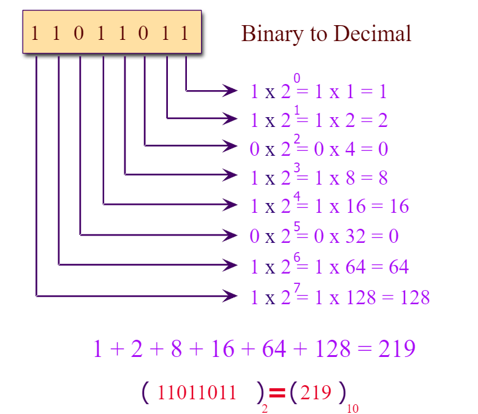

The binary number is the simplest kind of number system that uses only two digits of 0 and 1 (i.e. value of base 2).
Since digital electronics have only these two states (either 0 or 1), so binary number is most preferred in modern computer engineer, networking and communication specialists, and other professionals.
The decimal number uses digits from 0 to 9 to represent a number with base 10. The number is expressed in base-10 where each value is denoted by 0 or first nine positive integers.
Example: (20)10, (362)10, (1389)10, (100)10, (17.8)10
